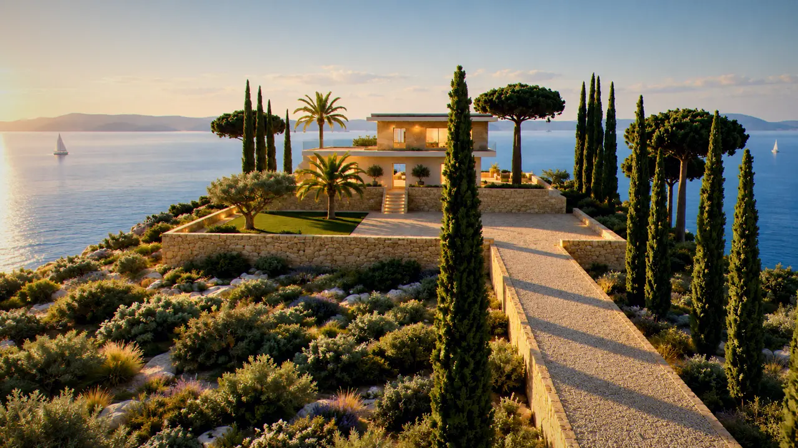
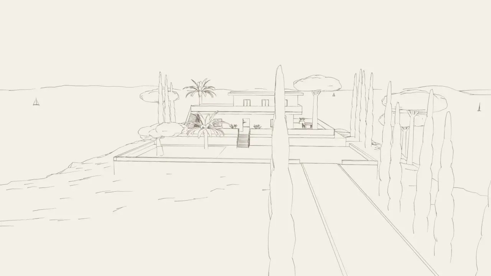

La côte sauvage à vos pieds, le golfe derrière la colline
La villa regarde le sud, vers le large et la côte des Maures qui se prolonge vers Le Lavandou. Derrière elle, la colline et le sentier du littoral qui rejoint Gigaro et les criques du cap Lardier. Saint-Tropez, Ramatuelle et Pampelonne sont de l'autre côté de la presqu'île, par la route de La Croix-Valmer.
Les temps de route
| Plage de Gigaro | 6 min, à pied par le sentier |
|---|---|
| La Croix-Valmer, village et marché | 8 min |
| Cavalaire-sur-Mer, port et plages | 12 min |
| Pampelonne | 25 min |
| Saint-Tropez | 30 min, ou 20 min en bateau depuis Cavalaire |
| Aéroport du golfe de Saint-Tropez, La Môle | 20 min |
| Aéroport de Toulon-Hyères | 55 min |
| Gare de Saint-Raphaël | 55 min |
| Aéroport de Nice | 1 h 45 |


Ce qu'on fait depuis la maison
Le sentier du littoral part du bas du terrain et longe la mer jusqu'au cap Lardier, deux heures de marche entre pins et roche, avec des criques où personne ne vient. Le marché du village se tient le dimanche matin, celui de Cavalaire le mercredi. Les vignobles de Ramatuelle et de La Croix-Valmer se visitent à vélo par les chemins de vigne.
Pour Saint-Tropez, le bateau depuis le port de Cavalaire évite la route de l'été et arrive au pied de la place aux Herbes.

